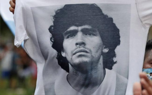
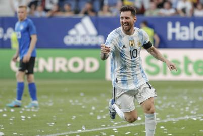
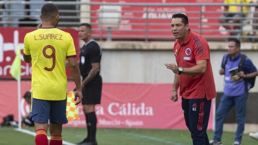

Daily Mail: Luis Díaz, entre las estrellas sin Mundial
El medio inglés elaboró el XI ideal de jugadores que se perderán la Copa del Mundo. El colombiano, Haaland y
Salah componen un ataque sin Zlatan Ibrahimovic.

El misterio por la muerte de Maradona
Conozca cómo va la investigación por el fallecimiento del mito un año después.

Lionel Messi, descomunal: hizo cinco goles en victoria de Argentina
La albiceleste dio otro recital, en partido de preparación.

Héctor Cárdenas: 'Hay un material humano importante'
El técnico encargado de colombia habló de la victoria contra Arabia Saudí.